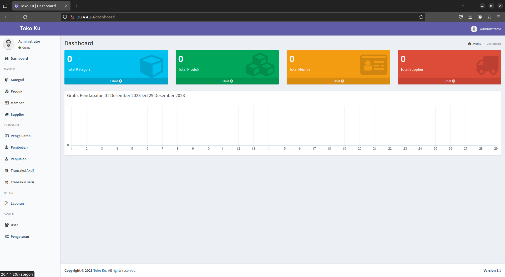
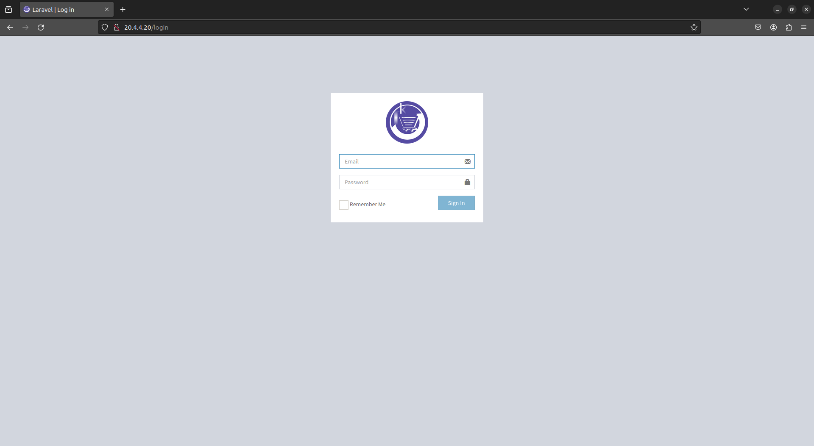
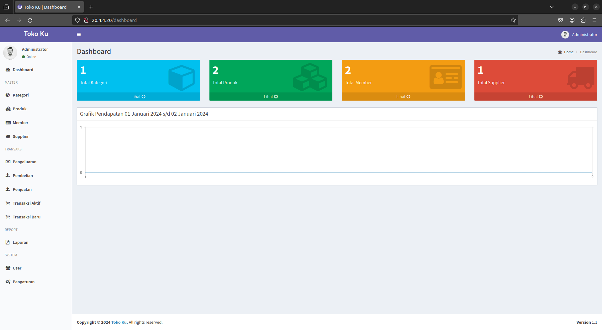
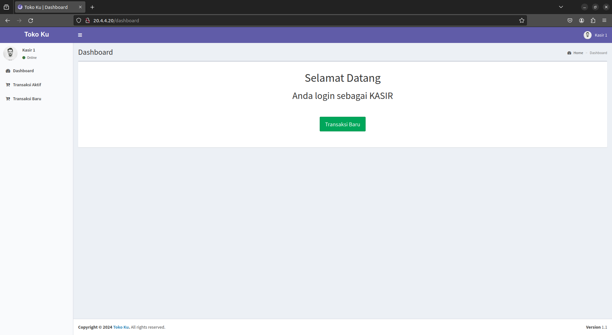

Deploy Aplikasi Point of Sales (POS) di atas OpenStack
Aplikasi POS atau point of sales adalah aplikasi yang digunakan untuk mempermudah kita dalam mengelola transaksi pada sebuah toko. Aplikasi POS ini dibuat menggunakan bahasa pemrograman PHP dengan framework laravel. Aplikasi ini menggunakan sebuah database untuk menyimpan datanya.
Fitur yang tersedia:- Manajemen Kategori Produk
- Manajemen Produk
- Manajemen Member atau Anggota
- Manajemen Supplier
- Transaksi Pengeluaran
- Transaksi Pembelian
- Transaksi Penjualan
- Laporan Pendapatan atau Laba & Rugi
- Dan lain-lain.
Kali ini kita akan deploy aplikasi POS ini di atas OpenStack. Kita akan membuat 2 instance dengan OpenStack yang kemudian akan digunakan untuk web server dan database. Web server dan database yang akan kita gunakan adalah Nginx dan MySQL.
Topologi yang akan kita gunakan:
 Tools yang akan kita gunakan:
Tools yang akan kita gunakan:
- OpenStack versi zed
- Openstackclient versi 6.4.0
- PHP versi 8.1.2
- Nginx versi 1.18.0
- MySQL versi 8.0.35
Langsung saja untuk langkah-langkah deploy aplikasi POS:
Membuat Project OpenStack
1. Pertama-tama, kita akan menetapkan variabel untuk terhubung dengan user admin di project admin. Caranya dengan mengeksekusi file rc yang didapat saat post-deploy openstack dengan kolla-ansible.
$ source /etc/kolla/admin-openrc.sh
2. Karena saat kita menginstal openstackclient berada di virtual environment, jadi kita akan mengaktifkan virtual environmentnya dulu.
$ source ~/kolla-venv/bin/activate
3. Selanjutnya, kita akan membuat project baru yang akan digunakan untuk mengelompokkan instance kita.
$ openstack project create project-pos
4. Di dalam project tersebut, kita akan membuat user dengan password yang akan digunakan untuk berinteraksi dengan project melalui user tersebut.
$ openstack user create --project project-pos --password 'alfian123' alfian
5. Setelah dibuat, kita akan menetapkan role kepada user tersebut di project.
$ openstack role add --user alfian --project project-pos admin
6. Verifikasi role yang di tetapkan pada user di dalam project.
$ openstack role assignment list --project project-pos --names +-------+----------------+-------+----------------------+--------+--------+-----------+ | Role | User | Group | Project | Domain | System | Inherited | +-------+----------------+-------+----------------------+--------+--------+-----------+ | admin | alfian@Default | | project-pos@Default | | | False | +-------+----------------+-------+----------------------+--------+--------+-----------+
7. Buat file rc untuk menetapkan variabel yang menghubungkan ke user dan project yang sudah dibuat.
$ vim alfian-openrc.sh
# Clear any old environment that may conflict.
for key in $( set | awk '{FS="="} /^OS_/ {print $1}' ); do unset $key ; done
export OS_PROJECT_DOMAIN_NAME='Default'
export OS_USER_DOMAIN_NAME='Default'
export OS_PROJECT_NAME='project-pos'
export OS_TENANT_NAME='project-pos'
export OS_USERNAME='alfian'
export OS_PASSWORD='alfian123'
export OS_AUTH_URL='http://10.4.4.100:5000'
export OS_INTERFACE='internal'
export OS_ENDPOINT_TYPE='internalURL'
export OS_IDENTITY_API_VERSION='3'
export OS_REGION_NAME='RegionOne'
export OS_AUTH_PLUGIN='password'
8. Eksekusi file rc yang baru dibuat untuk menetapkan variabel dari user alfian di project-pos.
$ source alfian-openrc.sh
Membuat Instance OpenStack
1. Pertama yang kita perlukan untuk membuat instance adalah Operating System, kita bisa mengunduh cloud image yang berisi OS yang sudah dikonfigurasi. Kita akan menggunakan cloud image dari ubuntu.
$ wget https://cloud-images.ubuntu.com/jammy/current/jammy-server-cloudimg-amd64.img
2. Selanjutnya, kita akan membuat image untuk instance di openstack dengan file yang sudah kita unduh tadi.
$ openstack image create --disk-format qcow2 --file ./jammy-server-cloudimg-amd64.img ubuntu-jammy
3. Instance tentunya memerlukan network untuk saling terhubung dengan instance lain ataupun ke internet. Jadi kita akan membuat network pada openstack.
3.1. Pertama yang akan kita buat adalah external/provider network.
$ openstack network create --share --external --provider-physical-network physnet1 --provider-network-type flat ex-net-pos $ openstack subnet create --network ex-net-pos --gateway 20.4.4.1 --no-dhcp --subnet-range 20.4.4.0/24 ex-subnet-pos
3.2. Setelah membuat external/provider network, kita akan membuat internal network untuk menghubungkan instance web server dengan database.
$ openstack network create in-net-pos $ openstack subnet --network in-net-pos --gateway 172.16.4.1 --allocation-pool start=172.16.4.100,end=172.16.4.254 --dns-nameserver 8.8.8.8 --subnet-range 172.16.4.0/24 in-subnet-pos
4. Supaya instance mendapatkan internet, kita perlu menghubungkan internal network dengan provider network. Jadi kita akan membuat sebuah router yang menghubungkannya.
$ openstack router create --external-gateway ex-net-pos router-pos $ openstack router add subnet router-pos in-subnet-pos
5. Secara default, traffic yang masuk ke dalam instance akan ditolak. Tetapi kita bisa membuat security group yang mengatur izin dari traffic tersebut.
5.1. Kita akan membuat security group yang mengizinkan traffic masuk dengan SSH dan HTTP untuk instance web server yang akan kita buat.
$ openstack security group create secgroup-webpos --description 'Allow SSH and HTTP' $ openstack security group rule create --ingress --protocol tcp --dst-port 22 secgroup-webpos $ openstack security group rule create --ingress --protocol tcp --dst-port 80 secgroup-webpos
5.2. Selanjutnya, kita akan membuat security group yang mengizinkan traffic masuk dengan SSH dan port database untuk instance database yang akan dibuat
$ openstack security group create secgroup-dbpos --description 'Allow SSH and DB' $ openstack security group rule create --ingress --protocol tcp --dst-port 22 secgroup-dbpos $ openstack security group rule create --ingress --protocol tcp --dst-port 3306 secgroup-dbpos
6. Untuk menentukan spesifik IP, kita bisa membuat port dari internal network yang akan digunakan instance web server dan database. Tetapkan security group yang sudah dibuat pada port.
$ openstack port create --network in-net-pos --fixed-ip subnet=in-subnet-pos,ip-address=172.16.4.110 --security-group secgroup-webpos port-web $ openstack port create --network in-net-pos --fixed-ip subnet=in-subnet-pos,ip-address=172.16.4.120 --security-group secgroup-dbpos port-db
7. Instance juga memerlukan CPU, RAM, dan disk. Kita akan membuat flavor yang merepresentasikan resource tersebut.
$ openstack flavor create --vcpus 1 --ram 2048 --disk 8 --public medium-pos
8. Karena secara default cloud image tidak memiliki password, kecuali CirrOS (karena untuk testing). Maka kita akan membuat keypair untuk masuk ke instance melalui public key SSH.
$ openstack keypair create --public-key ~/.ssh/id_rsa.pub pos-key
9. Selanjutnya, kita akan meluncurkan atau membuat 2 instance untuk web server dan database dengan resource yang sudah kita buat.
$ openstack server create --image ubuntu-jammy --flavor medium-pos --nic port-id=port-web --security-group secgroup-webpos --key-name pos-key ubuntu-webpos $ openstack server create --image ubuntu-jammy --flavor medium-pos --nic port-id=port-db --security-group secgroup-dbpos --key-name pos-key ubuntu-dbpos
10. Instance tersebut tidak bisa langsung kita akses. Kita perlu membuat floating IP dari external network.
$ openstack floating ip create --floating-ip-address 20.4.4.20 ex-net-pos $ openstack floating ip create --floating-ip-address 20.4.4.30 ex-net-pos
11. Setelah dibuat, kita akan memasangkan floating IP tersebut ke instance yang sudah kita buat.
$ openstack server add floating ip ubuntu-webpos 20.4.4.20 $ openstack server add floating ip ubuntu-dbpos 20.4.4.30
12. Verifikasi instance yang sudah kita buat. Pastikan terdapat 2 network yaitu dari internal network dan floating IP yang kita pasangkan.
$ openstack server list +--------------------------------------+---------------+--------+------------------------------------+--------------+------------+ | ID | Name | Status | Networks | Image | Flavor | +--------------------------------------+---------------+--------+------------------------------------+--------------+------------+ | 190fc703-b1ce-43eb-a41d-4135bcbdcff5 | ubuntu-dbpos | ACTIVE | in-net-pos=172.16.4.120, 20.4.4.30 | ubuntu-jammy | medium-pos | | 26d24d5c-2971-44a3-8580-1661c6265e9f | ubuntu-webpos | ACTIVE | in-net-pos=172.16.4.110, 20.4.4.20 | ubuntu-jammy | medium-pos | +--------------------------------------+---------------+--------+------------------------------------+--------------+------------+
Konfigurasi Database POS
1. Pertama-tama, kita akan mengakses instance ubuntu-dbpos yang sudah kita buat dengan public key.
$ ssh -o 'PubkeyAcceptedKeyTypes +ssh-rsa' ubuntu@20.4.4.30
2. Selanjutnya, kita akan menginstal server MySQLnya.
$ sudo -i # apt update # apt install mysql-server
3. Kita akses MySQLnya menggunakan user root. Karena password dari user root belum kita setting, maka ketika disuruh memasukkan password langsung enter saja.
# mysql -u root -p
4. Selanjutnya, kita akan membuat database yang akan digunakan untuk aplikasi POS.
mysql> CREATE DATABASE point_of_sales;
5. Supaya tidak menggunakan user root, kita akan membuat user baru yang bisa diakses dari semua host untuk mengelola database tersebut.
mysql> CREATE USER 'alfian'@'%' IDENTIFIED BY 'alfian';
6. Selanjutnya, kita akan memberikan izin user ke database yang sudah kita buat.
mysql> GRANT ALL PRIVILEGES ON point_of_sales.* TO 'alfian'@'%';
7. Verifikasi izin user ke database. Pastikan user memiliki izin untuk mengelola database yang sudah dibuat.
mysql> SHOW GRANTS FOR 'alfian'@'%'; +------------------------------------------------------------+ | Grants for alfian@% | +------------------------------------------------------------+ | GRANT USAGE ON *.* TO `alfian`@`%` | | GRANT ALL PRIVILEGES ON `point_of_sales`.* TO `alfian`@`%` | +------------------------------------------------------------+ mysql> exit
8. Secara default, server MySQL kita hanya bisa di akses dari localhost. Kita perlu mengkonfigurasinya supaya bisa kita akses dari instance web server.
# vim /etc/mysql/mysql.conf.d/mysqld.cnf port = 3306 bind-address = 0.0.0.0
9. Terakhir, restart MySQL untuk menetapkan konfigurasinya.
# systemctl restart mysql
Deploy Aplikasi POS
1. Pertama-tama, kita akan mengakses instance ubuntu-webpos yang sudah kita buat dengan public key.
$ ssh -o 'PubkeyAcceptedKeyTypes +ssh-rsa' ubuntu@20.4.4.20
2. Selanjutnya, kita akan menginstal Nginx untuk web server.
$ sudo -i # apt update # apt install nginx
3. Pastinya aplikasi POS memiliki source code, jadi kita akan clone dulu dari github kemudian kita copy ke lokasi document root dari nginx.
# git clone https://github.com/sandinur157/tutorial-membuat-aplikasi-point-of-sales.git # cp -r tutorial-membuat-aplikasi-point-of-sales/* /var/www/html/ # rm /var/www/html/index.nginx-debian.html
4. Sebelum lebih lanjut, kita cek dulu apakah instance sudah bisa terhubung dengan database yang ada dengan user dan password yang sudah kita buat. yaitu user alfian dengan password alfian
# apt install mysql-client-core-8.0 # mysql -u alfian -h 172.16.4.120 -p mysql> exit
5. Selanjutnya, kita akan menginstal PHP dan beberapa extension yang diperlukan untuk composer dan aplikasi.
# apt install zip unzip libzip-dev php php-mysql php-curl php-gd php-intl php-xsl php-mbstringKegunaan package tersebut:
- zip, unzip, libzip-dev untuk keperluan arsip ZIP
- php untuk bahasa yang digunakan aplikasi
- php-mysql untuk konektivitas database MySQL dari PHP
- php-curl untuk HTTP request melalui skrip PHP
- php-gd untuk memanipulasi gambar dari skrip PHP
- php-intl untuk menangani data multi-bahasa dan spesifik wilayah seperti memformat tanggal
- php-xsl untuk transformasi XSL ke dokumen XML
- php-mbstring untuk menangani string multibyte seperti set karakter dan bahasa
6. Setelah itu, kita akan menginstal dependesi aplikasi yang ada di file composer.json dengan composer.
# cd /var/www/html # composer install # composer update
7. Untuk menghubungkan php dengan mysql kita perlu mengonfigurasi environmentnya sesuai dengan database kita.
# cp .env.example .env # vim .env DB_CONNECTION=mysql DB_HOST=172.16.4.120 DB_PORT=3306 DB_DATABASE=point_of_sales DB_USERNAME=alfian DB_PASSWORD=alfian
8. Selanjutnya, kita perlu generate key untuk aplikasi, key tersebut akan disimpan di file .env.
# php artisan key:generate
10. Setelah itu, kita akan menjalankan migrasi database dari skrip yang ada di source code ke database MySQL kita.
# php artisan migrate
11. Terakhir, kita akan mengisi table database yang sudah kita migrasi dengan sample yang ada di source code.
# php artisan db:seed
Menjalankan Aplikasi dengan Nginx
1. Untuk menjalankan aplikasi PHP dengan Nginx kita akan menggunakan PHP-FPM. Jadi pertama yang perlu dilakukan adalah menginstalnya.
# apt install php-fpm
2. Selanjutnya, kita akan ubah ownership dari source code yang sudah kita clone ke nginx atau www-data.
# chown -R www-data:www-data /var/www/html
3. Kemudian kita akan mengonfigurasi nginx supaya bisa menjalankan aplikasi PHP.
# vim /etc/nginx/sites-enabled/default
4. Pada file tersebut akan kita konfigurasi pada bagian server.
server {
listen 80 default_server;
listen [::]:80 default_server;
root /var/www/html/public;
index index.php index.html index.htm index.nginx-debian.html;
server_name 20.4.4.20;
location / {
try_files $uri $uri/ /index.php?$query_string;
}
location ~ \.php$ {
include snippets/fastcgi-php.conf;
fastcgi_pass unix:/run/php/php8.1-fpm.sock;
}
location ~ /\.ht {
deny all;
}
}
Penjelasan konfigurasi:
- Bagian Listen adalah port dari nginx yang menerima HTTP request. Terdapat 2 line yaitu untuk IPv4 dan IPv6.
- Bagian Root adalah lokasi file yang akan dilayani oleh nginx.
- Bagian Index adalah file pertama dilayani ketika ada request.
- Bagian server_name adalah domain aplikasi yang dilayani, tapi karena saya tidak memiliki domain jadi bisa menggunakan IP address
- Bagian location / adalah meneruskan semua string kueri ke file index.php yang akan menangani data kueri.
- Bagian location ~ \.php$ adalah menangani file PHP menggunakan php-fpm dengan konfigurasi FastCGI dari snippets dan meneruskan ke server php-fpm menggunakan socket.
- Bagian location ~ /\.ht adalah mengabaikan semua file .httaccess yang digunakan apache.
5. Selanjutnya kita akan cek konfigurasi dari nginx.
# nginx -t
6. Untuk menetapkan konfigurasi, kita akan me-restart service nginx.
# systemctl restart nginx
Akses Aplikasi
1. Lakukan ssh tunneling dan akses ip dari floating ip melalui browser.
2. Login menggunakan user yang sudah ada waktu seeding database.
User Administrator- user: admin@gmail.com
- password: 123
- user: kasir1@gmail.com
- password: 123
Tampilan Dashboard Administrator:
Tampilan Dashboard Kasir 1:
